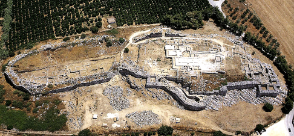
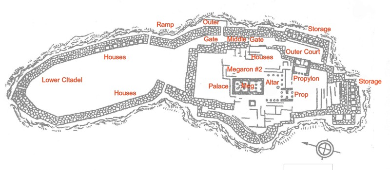
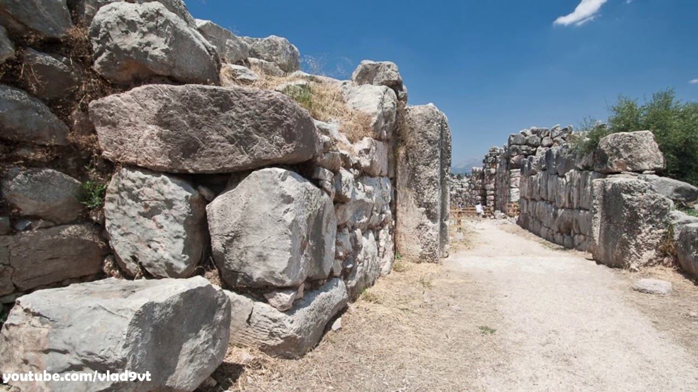
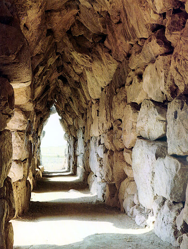
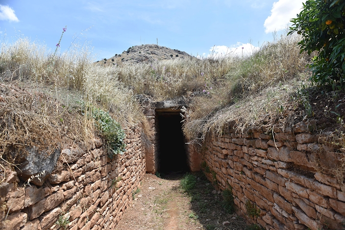

GCSE Classical Civilisation · The Homeric World · 1.3 · Revision
Tiryns
The great fortress of the Argolid, famous for its colossal Cyclopean walls and the galleries built within them: its ramp and gate, its palace, its defences and its tholos tomb, and what they tell us. A prescribed site.
Tiryns
At a glance

The citadel today · a low ridge in the Argolid plain

Groundplan · the upper and lower citadel
Key facts
Type: a fortified Mycenaean citadel, famous above all for its defences
Built: walls and palace mainly 14th to 13th century BC, at its height c.1300–1200 BC, with a late extension at the end of the 13th century
Location: a low rocky ridge in the Argolid plain near the coast, a short distance from Mycenae
Rediscovered: excavated by Heinrich Schliemann and Wilhelm Dörpfeld in the 1880s
Significance: the most strongly fortified of the citadels, known above all for its Cyclopean walls and the galleries built inside them
Why it matters
the great fortress of the age: Homer calls it “Tiryns of the mighty walls” (Iliad 2.559), and the remains bear that out
it shows the same Mycenaean concern with defence and display as Mycenae, but on lower, flatter ground, so the walls have to do far more of the work
like Mycenae, abandoned around 1200–1100 BC as the Bronze Age world collapsed
Around the citadel
The walls, the ramp, the galleries, the palace and the tomb

The Cyclopean walls — among the thickest in the Greek world
The Cyclopean wallsthe defences
The colossal stone wall enclosing the citadel, even more massive than Mycenae's, built to keep attackers out.
among the thickest walls in the Greek world, so broad that passages could be tunnelled inside them
built from unworked limestone blocks so large that, as at Mycenae, later Greeks credited the one-eyed Cyclopes; legend said they raised them for King Proetus
the traveller Pausanias marvelled at them, comparing the walls to the pyramids of Egypt
The great ramp up to the main gate
The great ramp and the main entrance
The long, exposed approach ramp up to the main gate, shaped so the defenders held every advantage.
the ramp forced attackers to climb towards the wall with their unshielded right side turned to the defenders above, who could strike them as they came
the main gate opened into a passage running deep into the citadel, easy to defend and easy to block

A corbelled gallery inside the walls
The galleries
Corbelled passages and storerooms built into the thickness of the walls, the most famous feature of the site.
some up to 30m long, roofed by corbelling into pointed vaults, with chambers opening off them
used mainly for storage and shelter, turning the walls themselves into usable space
their stones are worn smooth from long use
The palace and its megaron
The ruler's residence and throne room, set on the highest part of the citadel (the upper citadel).
at its heart the megaron, a great hall with a central hearth and a throne, much like Mycenae's
the palace floors had drainage, and at least two staircases show that parts rose to a second storey
The lower citadel and the water passages
The enclosed lower town, extended late in the site's life, and its secret water supply.
at the end of the 13th century a loop of wall was added to the north, taking in workshops and houses
like Mycenae, hidden stepped passages ran out under the walls to underground water sources, so the defenders could still drink during a siege

The tholos tomb, near the citadel
The tholos tomb
A monumental “beehive” tomb built into a hillside about half a mile from the citadel, for the elite.
roughly 6m tall and 6m wide, with an entrance only 1.5m high
a fine corbelled roof and massive blocks span the entrance; inside lay a large round stone that may have been an altar
One site built around a single idea: defence. The walls, the trap of the ramp, the galleries and the hidden water all serve protection, and their sheer scale shows off the rulers' power at the same time.
Significance & interpretation
What the site shows, and how far to trust it
A fortress above all
defence dominates everything: the colossal walls, the exposed ramp and guarded entrance, the galleries that turn the walls into storerooms, and the secret water access all serve protection
on lower, flatter ground than Mycenae, Tiryns could not rely on a steep hill, so the walls had to be even more massive: defence and display fused in sheer bulk
like Mycenae, it shows rulers who were rich and powerful, and also anxious about attack
Where Mycenae overawes a visitor with its gate, Tiryns overawes with the raw mass of its walls. It is the clearest statement of the age's obsession with defence.
Tiryns and Homerthe key parallel
Homer calls it “Tiryns of the mighty walls” (Iliad 2.559), and the remains more than match the epithet, just as “rich in gold” matches Mycenae
the site proves that a great walled age really existed for Homer to look back on, though the same caution applies: composed around four hundred years later in a poorer age, the poems recall this world only in broad outline
The walls fit Homer's phrase so well that Tiryns is a textbook case of archaeology backing his general picture while leaving the events and the detail unproven.
How useful is the site as evidence?
Strong on defence, engineering and elite power: the walls and galleries show enormous organised labour and a ruling class confident enough to command it
Weaker on daily life, religion and the poor, as at Mycenae, since grand stone survives while wood, cloth and food rot away
the Cyclopes story and the legendary links are tradition rather than evidence, and the dating is only approximate
For military architecture and the strength of the elite the site is first-rate evidence; for the texture of ordinary life it tells us far less.
Tiryns and Mycenae comparedthe exam pivot
Shared: both Argolid citadels with Cyclopean walls, a megaron-centred palace, secret water defences and a tholos tomb outside the walls; both credited to the Cyclopes; both abandoned around 1200–1100 BC
Different: Mycenae is higher, richer in its gold graves and crowned by the Lion Gate, while Tiryns is lower and plainer but even more heavily walled and uniquely famous for its galleries
Learn them as a pair: Mycenae for wealth and display, Tiryns for raw defensive power.
Exam focus
Practice questions — from short answers to the extended response
Short answer & explain
Describe two features of the defences at Tiryns. [short answer]
Explain how the design of the ramp and entrance at Tiryns helped its defenders. [explain]
Source usefulness
How useful is the site of Tiryns for understanding Mycenaean military architecture? [source usefulness]
Extended response · how far do you agree
“Tiryns shows that defence mattered more than anything else to the Mycenaeans.” How far do you agree? [extended response]
Flashcards
6 cards — click to flip, use arrows to move through